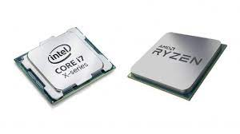
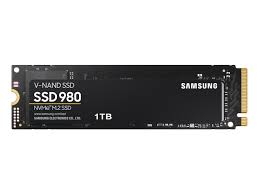
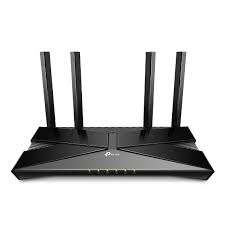
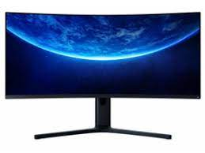

Hardverek
- CPU

- A CPU (angol: Central Processing Unit - központi feldolgozóegység) más néven processzor ill. mikroprocesszor, a számítógép „agya”, azon egysége, amely az utasítások értelmezését és végrehajtását vezérli, félvezetős kivitelezésű, összetett elektronikus áramkör. Magyarra többféleképpen fordítják, így pl. a központi végrehajtó egység, központi feldolgozó egység, központi feldolgozó processzor, vagy egyszerűen processzor kifejezések is elterjedtek.
Míg a processzor fogalma már korábban ismert volt, a mikroprocesszor megjelenését csak a félvezetős technológia és az integrált áramkörök kifejlesztése tette lehetővé, az 1970-es évek elején.
A processzor alatt általában mikroprocesszort értünk, régebben a processzor sok különálló áramkör volt, ám a mikroprocesszorral sikerült a legfontosabb komponenseket egyetlen szilíciumlapkára integrálni.
- SSD

- Bővebben, az SSD egy olyan, mozgó alkatrészek nélküli adattároló eszköz, ami memóriában tárolja az adatot, a környezetéhez, illetve a gazdaszámítógéphez a merevlemezekhez hasonlóan SATA vagy egyéb (SCSI, PCI Express, USB, stb.) csatlakozófelülettel csatlakozik és azokhoz hasonlóan blokkos adatelérést biztosít.
Az SSD eszközökben a gyártók különböző típusú memóriákat használhatnak, mint pl. flash vagy különböző RAM fajták - ezt az ár- és a teljesítményigények határozzák meg.
- Router

- Az útválasztó, forgalomirányító vagy angol kifejezéssel: router a számítógép-hálózatokban egy útválasztást végző eszköz, amelynek a feladata a különböző hálózatok - például egy otthoni vagy irodai hálózat és az internet, vagy egyes országok közötti hálózatok, vagy vállalaton belüli - összekapcsolása, az azok közötti adatforgalom irányítása.
A számítógépes hálózatok működésének leírására több elméleti modell is létezik, az általánosan elterjedt OSI (Open Systems Interconnection) modell réteges struktúrájában a router a harmadik - hálózati - rétegben helyezkedik el. Útvonalválasztási döntéseinek alapját az ezen rétegbeli - általában IP-címek adják.
- Monitor

- A monitor a számítógép megjelenítő perifériája. A monitort VGA, DVI, HDMI vagy DisplayPort monitorkábel köti össze a videóadapterrel, mely utasításai alapján jeleníti meg a kívánt képet.
A számítógép folyamatosan küld jeleket a videoadapternek, hogy milyen karaktert, képet, vagy grafikát kell megjeleníteni.
Az adapter átfordítja ezt olyan pixelekké, melyek segítségével a monitor meg tudja jeleníteni a képet.